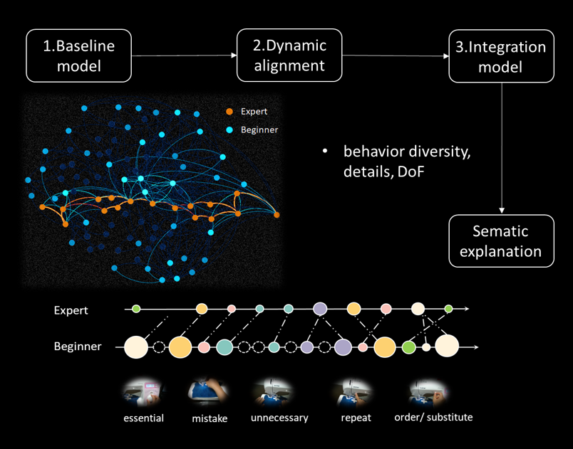

About Me
I am a researcher specializing in Computer Vision, Statistical Learning (temporal modeling), and Human Behavior Analysis. Currently, I am a Research Associate at the School of Computing Science, University of Glasgow. Having previously served as a Postdoctoral Research Associate (2021–2025) at the University of Edinburgh. I earned my PhD in Electrical Engineering from Kyoto University in 2020.
My work centers on vision-based analysis of physical behavior, anomaly detection, temporal modelling, and activity recognition.
Technical Skills
Experience & Education
University of Edinburgh
Developing computer vision and machine learning algorithms for in-home monitoring. Modeled physical states using Bayesian Networks, Gaussian Processes, and utilized deep learning (CNNs, LSTM, VAE) and temporal behaviour analysis.
Kyoto University
Dissertation: Analysis and Modeling of Machine Operation Tasks Using Egocentric Vision. Developed methods for touch sensing, hotspot detection, and complex task sequence modeling using modified Hidden Markov Models and dynamic alignment.
Sichuan University
Focused on video denoising, image processing, compressed sensing, and low-rank methods.
Featured Research Projects
Vision-Based Human Physical Behavior Analysis (2021–2025)
Developed privacy-preserving methods for sensing physical behavior in domestic environments. My work utilized RGB-D imaging, activity recognition, behavior analysis, and temporal modeling (Bayesian Networks, Gaussian Processes) to infer changes in behavioral states. Key contributions include handling real-world challenges like low lighting and moving pets to detect anomalies, inactivity, and subtle functional decline reliably.

Analysis and Modeling of Machine Operation Tasks using Egocentric Vision (2015–2020)
Investigated operational behaviors using head-mounted cameras, IMUs, and gaze trackers. I developed methods for touch sensing and hotspot detection, and applied Modified Hidden Markov Models to model complex task sequences (repetitive, mistakes, new ways) for automatic guidance systems and user skill assessment.

Selected Publications
-
Evaluating Personalised Beneficial Interventions in the Daily Lives of Older Adults Using a Camera
Chen Long-fei, Christopher Lochhead, Robert B. Fisher, et al.
International Conference on AI in Healthcare (AliH), 2025: 131-141. -
MSPW: Monitoring Simulated Physical Weakness Using Detailed Behavioral Features and Personalized Modeling
Chen Long-fei, Muhammad Ahmed Raza, Craig Innes, Subramanian Ramamoorthy, Robert B. Fisher
ACM Transactions on Computing for Healthcare, 2026. -
OPPH: A Vision-Based Operator for Measuring Person Body Movements in Healthcare
Chen Long-fei, Subramanian Ramamoorthy, Robert B. Fisher
12th International Workshop on Assistive Computer Vision and Robotics (@ECCV24), 2024: 203-217. -
Measuring Changes in Upper Body Movement Due to Fasting Using a Camera
Chen Long-fei, et al.
Sensors, 24(22): 7242, 2024. -
MISO: Monitoring Inactivity of Single Older Adults at Home using RGB-D Technology
Chen Long-fei, Robert B. Fisher
ACM Transactions on Computing for Healthcare, 2024. -
Modeling user behaviors in machine operation tasks for adaptive guidance
Chen Long-fei, Yuichi Nakamura, and Kazuaki Kondo
arXiv preprint, arXiv:2003.03025, 2020. -
Hotspots Integrating of Expert and Beginner Experiences of Machine Operations through Egocentric Vision
Chen, L., Nakamura, Y., Kondo, K., Damen, D., & Mayol-Cuevas, W. W.
16th International Conference on Machine Vision Applications (MVA), pp. 1-6, 2019. -
Hotspots Detection for Machine Operation in Egocentric Vision
Chen, L., Kondo, K., Nakamura, Y., Damen, D., & Mayol-Cuevas, W. W.
15th IAPR International Conference on Machine Vision Applications (MVA), pp. 223-226, 2017. -
A Low-rank Based Robust Video Deblocking Method
Chen, L., & Xiaomei, Y.
11th International Computer Conference on Wavelet Active Media Technology and Information Processing (ICCWAMTIP), pp. 55-59, 2014.
Open Source Datasets
A real-world dataset containing human subjects who are motionless, used for detecting inactivity or loss of consciousness.
View Dataset
A synthetic dataset with 2D/3D surgical tools for object recognition and pose estimation.
View Dataset
News & Grants
Get In Touch
I am actively seeking new opportunities. Feel free to reach out via the form below or email me directly at kele39@gmail.com.